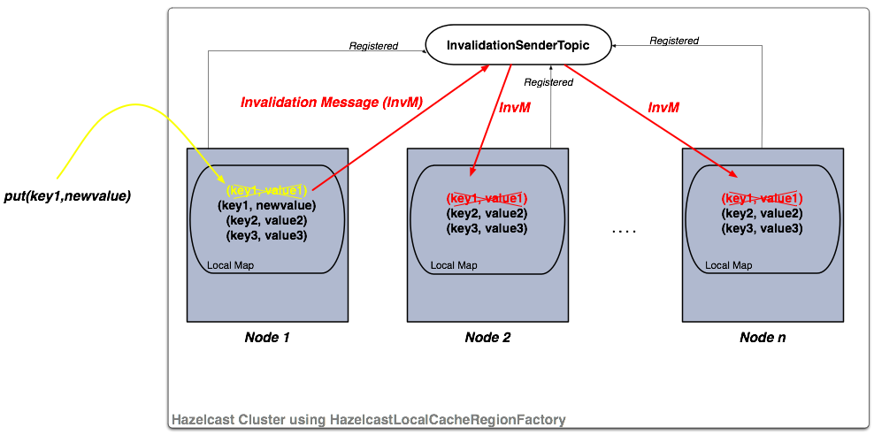

Integrated Clustering
Hibernate Second Level Cache
Hazelcast provides distributed second level cache for your Hibernate entities, collections and queries.
Sample Code for Hibernate
Please see our sample application for Hibernate Second Level Cache.
Supported Hibernate Versions
- hibernate 3.3.x+
- hibernate 4.x
Hibernate Configuration
To configure for Hibernate, add hazelcast-hibernate3-<hazelcastversion>.jar or hazelcast-hibernate4-<hazelcastversion>.jar into your classpath depending on your Hibernate version.
Then add the following properties into your Hibernate configuration file (e.g. hibernate.cfg.xml).
Enabling the use of second level cache
<property name="hibernate.cache.use_second_level_cache">true</property>
Hibernate RegionFactory
HazelcastCacheRegionFactory
HazelcastCacheRegionFactoryuses Hazelcast Distributed Map to cache the data, so all cache operations go through the wire.<property name="hibernate.cache.region.factory_class"> com.hazelcast.hibernate.HazelcastCacheRegionFactory </property>HazelcastLocalCacheRegionFactory
You can use
HazelcastLocalCacheRegionFactorywhich stores data in a local node and sends invalidation messages when an entry is updated/deleted locally.<property name="hibernate.cache.region.factory_class"> com.hazelcast.hibernate.HazelcastLocalCacheRegionFactory </property>
Optional Settings
To enable use of query cache:
<property name="hibernate.cache.use_query_cache">true</property>To force minimal puts into query cache:
<property name="hibernate.cache.use_minimal_puts">true</property>
NOTE: QueryCache is always LOCAL to the node and never distributed across Hazelcast Cluster.
Hazelcast Configuration for Hibernate
To configure Hazelcast for Hibernate, put the configuration file named
hazelcast.xmlinto the root of your classpath. If Hazelcast cannot findhazelcast.xml, then it will use the default configuration fromhazelcast.jar.You can define a custom-named Hazelcast configuration XML file with one of these Hibernate configuration properties.
<property name="hibernate.cache.provider_configuration_file_resource_path">
hazelcast-custom-config.xml
</property>
<property name="hibernate.cache.hazelcast.configuration_file_path">
hazelcast-custom-config.xml
</property>
Hazelcast creates a separate distributed map for each Hibernate cache region. You can easily configure these regions via Hazelcast map configuration. You can define backup, eviction, TTL and Near Cache properties.
RegionFactory Options
HazelcastCacheRegionFactory
HazelcastCacheRegionFactory uses standard Hazelcast Distributed Maps. All operations like get, put, and remove will be performed using the Distributed Map logic. The only downside of using HazelcastCacheRegionFactory may be the lower performance compared to HazelcastLocalCacheRegionFactory since operations are handled as distributed calls.
NOTE: If you use HazelcastCacheRegionFactory, you can see your maps on Management Center.
With HazelcastCacheRegionFactory, all of the following caches are distributed across Hazelcast Cluster.
- Entity Cache
- Collection Cache
- Timestamp Cache
HazelcastLocalCacheRegionFactory
With HazelcastLocalCacheRegionFactory, each cluster member has a local map and each of them is registered to a Hazelcast Topic (ITopic). Whenever a put or remove operation is performed on a member, an invalidation message is generated on the ITopic and sent to the other members. Those other members remove the related key-value pair on their local maps as soon as they get these invalidation messages. The new value is only updated on this member when a get operation runs on that key. In the case of get operations, invalidation messages are not generated and reads are performed on the local map.
An illustration of the above logic is shown below.

If your operations are mostly reads, then this option gives better performance.
NOTE: If you use HazelcastLocalCacheRegionFactory, you cannot see your maps on Management Center.
With HazelcastLocalCacheRegionFactory, all of the following caches are not distributed and are kept locally in the Hazelcast Node.
- Entity Cache
- Collection Cache
- Timestamp Cache
Entity and Collection are invalidated on update. When they are updated on a node, an invalidation message is sent to all other nodes in order to remove the entity from their local cache. When needed, each node reads that data from the underlying DB.
Timestamp cache is replicated. On every update, a replication message is sent to all the other nodes.
Eviction support is limited to maximum size of the map (defined by max-size configuration element) and TTL only. When maximum size is hit, 20% of the entries will be evicted automatically.
Hazelcast Modes for Hibernate Usage
Hibernate 2nd Level Cache can use Hazelcast in two modes: Peer-to-Peer and Client/Server.
P2P (Peer-to-Peer)
With P2P mode, each Hibernate deployment launches its own Hazelcast Instance. You can also configure Hibernate to use an existing instance, so instead of creating a new HazelcastInstance for each SessionFactory, you can use an existing instance by setting the hibernate.cache.hazelcast.instance_name Hibernate property to the HazelcastInstance's name. For more information, please see the Named HazelcastInstance section.
Disabling shutdown during SessionFactory.close()
Shutting down HazelcastInstance can be disabled during SessionFactory.close(). To achieve this set the Hibernate property hibernate.cache.hazelcast.shutdown_on_session_factory_close to false. (In this case Hazelcast property hazelcast.shutdownhook.enabled should not be set to false.) Default value is true.
Client/Server
- You can set up Hazelcast to connect to the cluster as Native Client. Native client is not a member; it connects to one of the cluster members and delegates all cluster wide operations to it. When the relied cluster member dies, client will transparently switch to another live member.
<property name="hibernate.cache.hazelcast.use_native_client">true</property>
To set up Native Client, add the Hazelcast group-name, group-password and cluster member address properties. Native Client will connect to the defined member and will get the addresses of all members in the cluster. If the connected member dies or leaves the cluster, the client will automatically switch to another member in the cluster.
<property name="hibernate.cache.hazelcast.native_client_address">10.34.22.15</property>
<property name="hibernate.cache.hazelcast.native_client_group">dev</property>
<property name="hibernate.cache.hazelcast.native_client_password">dev-pass</property>
NOTE: To use Native Client, add hazelcast-client-<version>.jar into your classpath. Refer to Clients for more information.
Hibernate Concurrency Strategies
Hibernate has four cache concurrency strategies: read-only, read-write, nonstrict-read-write and transactional. Hibernate does not force cache providers to support all those strategies. Hazelcast supports the first three: read-only, read-write, and nonstrict-read-write. It has no support for transactional strategy yet.
- If you are using XML based class configurations, add a cache element into your configuration with the usage attribute set to one of the read-only, read-write, or nonstrict-read-write strategies.
<class name="eg.Immutable" mutable="false">
<cache usage="read-only"/>
....
</class>
<class name="eg.Cat" .... >
<cache usage="read-write"/>
....
<set name="kittens" ... >
<cache usage="read-write"/>
....
</set>
</class>
- If you are using Hibernate-Annotations, then you can add a class-cache or collection-cache element into your Hibernate configuration file with the usage attribute set to read only, read/write, or nonstrict read/write.
<class-cache usage="read-only" class="eg.Immutable"/>
<class-cache usage="read-write" class="eg.Cat"/>
<collection-cache collection="eg.Cat.kittens" usage="read-write"/>
- Or alternatively, you can put Hibernate Annotation's @Cache annotation on your entities and collections.
@Cache(usage = CacheConcurrencyStrategy.READ_WRITE)
public class Cat implements Serializable {
...
}
Advanced Settings
Accessing underlying HazelcastInstance
Using com.hazelcast.hibernate.instance.HazelcastAccessor, you can access the underlying HazelcastInstance used by Hibernate SessionFactory.
SessionFactory sessionFactory = ...;
HazelcastInstance hazelcastInstance = HazelcastAccessor
.getHazelcastInstance(sessionFactory);
Changing/setting lock timeout value of read-write strategy
You can set a lock timeout value using the hibernate.cache.hazelcast.lock_timeout_in_seconds Hibernate property. The value should be in seconds. The default value is 300 seconds.